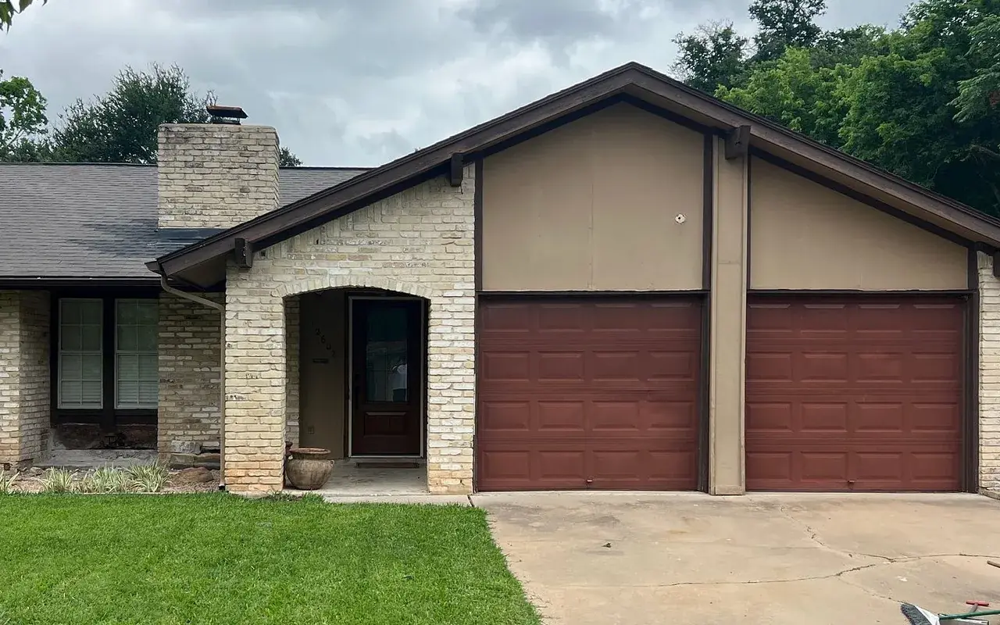
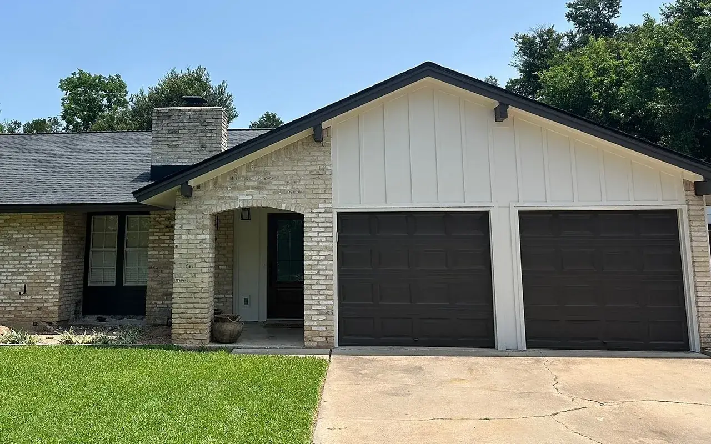

James Hardie, installed by an Elite Preferred crew.
The firm re-sides by the full wall or the whole house, in fiber cement, and prints what 415 of those jobs cost.


BeforeAfter Siding portion$25k-$30kMilwood, Austin, May 2026: HardiePlank Select Cedar Mill 8.25". Open job file APS-4739 (opens austinprosiding.com in a new tab)
The wall, layer by layer.
Every one of the firm's 415 priced siding jobs is James Hardie fiber cement. Tear-off, sheathing fixes where they are needed, house wrap, boards, trim, then paint.
| A | Board width | 8.25″ | also made 5.25″, 6.25″, 7.25″ |
|---|---|---|---|
| B | Exposure | 7″ | what shows of each course |
| C | Length | 12 ft | |
| D | Thickness | 5/16″ |
- Sheathing Rotten sections replaced at tear-off
- House wrap Over the sheathing, under the boards
- HardiePlank lap Primed, painted on site, or ColorPlus
- Trim Corners and openings, same job
What 415 job files chose
Counts are the product named in each priced siding job file, 2022-2026. A line naming both textures counts as neither.
Board & batten, the modern farmhouse look
Four-foot HardiePanel sheets hung vertically, with 2.5″ HardieTrim battens fastened over them, 16″ on centre. Panels 8 or 10 ft tall, Cedarmill or smooth.
What 415 siding jobs cost.
Each bar is documented work with a materials-and-labour price, before discounts, for the siding portion of the job. The median landed in $10k-$15k; the middle half between $5k and $20k.
Show as a table
| Price band | Jobs |
|---|---|
| Under $2k | 12 |
| $2k-$5k | 33 |
| $5k-$10k | 70 |
| $10k-$15k | 107 |
| $15k-$20k | 92 |
| $20k-$25k | 53 |
| $25k-$30k | 22 |
| $30k-$40k | 19 |
| $40k-$50k | 4 |
| $50k-$60k | 1 |
| $60k-$75k | 2 |
What moves the price
- Wall area and storiesMore square footage and second-story walls mean more material, labour and staging.
- What's under the old sidingRotten sheathing found at tear-off gets replaced before new siding goes on.
- Whole house or a few wallsThe firm re-sides by the full wall or the whole house, and prices only what you need.
- Trim, soffit and fasciaReplacing them with the siding adds to the price and gives a cleaner finish.
- Paint or ColorPlusSherwin-Williams paint after install, or James Hardie's factory-baked ColorPlus.
- Profile and detailsLap or board and batten, plus accent walls, corners and openings.
Bands come straight from each job's worksheet, read per trade, so a siding-and-painting project contributes only its siding amount here. Jobs whose per-trade split could not be verified are excluded entirely, which is why this is a documented sample of the firm's work rather than every job it has run. Materials and labour, excluding tax; 31 Central Texas cities.
Four siding jobs, price on each.
Drag across the photo. Each pair is one of the firm's jobs with that job's own siding band.
- Where
- Milwood, Austin
- Finished
- May 2026
- Installed
- HardiePlank Select Cedar Mill 8.25"
- Siding portion
- $25k-$30k
Bands are the job's own worksheet amount for that trade, before discounts. Photos come from the job file, cropped to the same frame.
Drag the handle or tap the photo to compare.Drag the handle to compare, or rest the pointer on the photo: the square shows the other half of the job through it.
Built for Texas sun, heat and hail.
Half of it is the board. The other half is the install: flashed, sealed and gapped right by an Elite Preferred contractor.
Doesn't warp.
UV and heat. Won't warp, swell or sag through triple-digit summers.
Doesn't rot.
Moisture. Won't rot, swell or soak up water like wood and hardboard.
Doesn't burn.
Fire. Noncombustible fiber cement. The board itself won't burn.
Doesn't feed termites.
Pests. Termites and woodpeckers leave fiber cement alone.
Lasts for decades.
Warranty. Non-prorated for 30 years from James Hardie when an Elite Preferred contractor installs it.
Warranty, in writing. James Hardie's 30-year non-prorated siding warranty, plus Austin Pro's lifetime workmanship warranty on labour. 15 years on trim.
Colour on the board.
Primed boards painted after they go up in any of 1,700+ Sherwin-Williams colours, with free colour matching. Or ColorPlus, baked on at the James Hardie plant: 17 colours for Austin, with Arctic White trim.
Sherwin-Williams, a sample of 1,700+
- Pure WhiteSW 7005
- AlabasterSW 7008
- Agreeable GraySW 7029
- Repose GraySW 7015
- Accessible BeigeSW 7036
- DovetailSW 7018
- Gauntlet GraySW 7019
- Urbane BronzeSW 7048
- Iron OreSW 7069
- Tricorn BlackSW 6258
- In the NavySW 9178
- Hunt ClubSW 6468
The usual finish. Hex values as the firm publishes them.
James Hardie ColorPlus, all 17 for Austin
- Arctic WhiteColorPlus
- Cobble StoneColorPlus
- Navajo BeigeColorPlus
- Khaki BrownColorPlus
- Timber BarkColorPlus
- Rich EspressoColorPlus
- Mountain SageColorPlus
- Light MistColorPlus
- Pearl GrayColorPlus
- Gray SlateColorPlus
- Boothbay BlueColorPlus
- Evening BlueColorPlus
- Deep OceanColorPlus
- Aged PewterColorPlus
- Night GrayColorPlus
- Iron GrayColorPlus
- Countrylane RedColorPlus
Factory finish, 15+ years. Screen colour is a guide only.
Siding questions, answered.
The firm's own answers, word for word. Anything else, bring it to the free inspection.
How much does siding replacement cost in Austin?
Across the 415 siding jobs we documented from 2022-2026, the middle half landed between $5,000 and $20,000, and the median fell in the $10,000-$15,000 band. Your price depends on wall area, what’s under the old siding, trim and paint. The inspection and estimate are free.
How long does a siding replacement take?
A siding replacement typically takes 1 to 2 weeks, including the painting process. It depends on the size of your home, the complexity of the job, weather and the type of siding being installed.
What warranties come with new siding?
James Hardie siding carries a 30-year non-prorated warranty when an Elite Preferred contractor installs it. Austin Pro adds a lifetime workmanship warranty on labor.
Does Austin Pro repair siding, or only replace it?
We replace. If only part of the house is damaged, we can re-side just the affected walls in James Hardie fiber cement instead of the whole exterior, but we don’t do small patch repairs. The free inspection shows which walls need it.
What kind of siding does Austin Pro install?
James Hardie fiber cement on most of our homes, as a James Hardie Elite Preferred contractor. Most often that’s HardiePlank lap in the 8.25-inch Select Cedar Mill profile, with board and batten as an accent.
Does new siding need to be painted?
We take care of both installation and painting. After the siding goes up we paint it with one of more than 1,700 Sherwin-Williams colors, with free color matching. James Hardie’s ColorPlus siding comes with a factory-baked finish instead.
Does Austin Pro do soffit and fascia?
Yes. We replace soffit and fascia, which protect your roof’s edges and your home’s ventilation, usually in the same job as the siding.
Can I finance new siding?
Yes, on approved credit: 0% APR for 24 months, 4.99% APR for 60 months or 7.99% APR for 120 months. Ask about financing at your free inspection.
What homeowners say about the siding.
4.9 on 474 Google reviews. Excerpts as the firm publishes them; an ellipsis marks where a review goes on.
…Jake handled our initial bid and was incredibly thorough, providing a fair and transparent estimate without any high-pressure sales tactics…
…We had them replace and paint all of our siding. Build quality was top notch, and install was fast and efficient…
I hired Austin Pro to redo my house's 80s era masonite siding with Hardie Board. They gave a great quote and did phenomenal work…
…Kevin and his team, as well as Garrett, went above and beyond to make sure the work was of a high standard…
Book your free siding inspection
The office calls you back to pick a time. The project manager looks at the siding, measures and photographs what they find, and you get the scope, materials and price. Free, no obligation.
Monday-Friday 8 AM-8 PM, Saturday 8 AM-6 PM, Sunday noon-5 PM. Office: 7801 N Lamar Blvd, Suite C70, Austin, TX 78752.